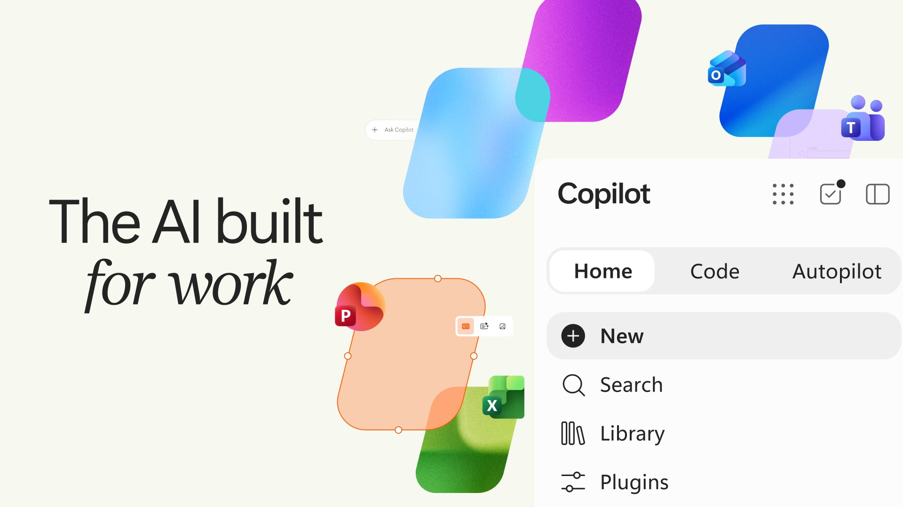
Copilot is not a button, it is a family
Which AI assistants Microsoft has, where they live, what is free, and how to check their answers
Family map • for you • for work • agents • for companies • 2 live demos • homework without a licence. All courier data is synthetic. Facts as of 13 Oct 2026.
⏱ 2 min. “You have seen the word Copilot everywhere: Windows, Edge, Teams, Word, GitHub. Today we sort out what this family is, how its members differ, and what you can open today for free.”
In the background is Microsoft's official picture of 25 September 2026: in September the personal and work Copilot were merged into one app. This is the news of the season; we come back to it on slide 6.
Running example: our courier team from L04–L06: Anna (product), Pavel (developer), Ola (support) and one feature: Prime subscribers get free delivery from $75 in the city. All data is made up.
Before class: open Copilot (personal and work sign-in), prepare the Teams poll for slide 2, keep demo_courier_copilot/meeting_notes.md and release_checklist.txt open.
The Microsoft AI family: who lives where
⏱ 5 min. Poll first (1 min): “Which Copilot do you already have?” “None” is almost always wrong: Copilot ships with Windows 11 and Edge, and IT Park students have a school account with Copilot Chat.
Walk the map. For you: the Copilot app, Copilot in Windows 11 and Edge, images in Paint and Photos, Bing search: personal account, free. In the centre is Microsoft 365, the work and school suite: Word, Excel, PowerPoint, Outlook, Teams, OneNote, OneDrive, SharePoint, Loop and Pages. Every app has a Copilot button; with free Copilot Chat it answers from the web and pasted text, with a Microsoft 365 Copilot licence it sees your mail, files and meetings. Here too are the agents: Researcher, Analyst, Cowork, Facilitator in Teams and Agent Builder for your own agents.
On the right, developers: GitHub Copilot in VS Code and on github.com, Microsoft Foundry for models and agents in your own apps, Copilot Studio for building agents and workflows. Below, company products, turned on by IT: Dynamics 365, Power Apps, Power Automate, Power BI and Fabric, Security Copilot, Agent 365, Dragon Copilot for doctors. And the common core: OpenAI, Anthropic and Microsoft's own MAI models. Only what Copilot sees and is allowed to do differs.
The icons on the slide are simplified tiles, not official logos.
Model → chat → assistant → agent
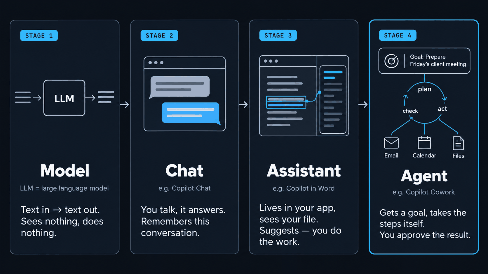
⏱ 2 min. “On the map we saw words like Copilot, agents, Agent Builder. Before we go on, let's agree on what they mean.”
Read left to right. A model is the LLM, the large language model you called from Python in L03: text in, text out. By itself it sees nothing and does nothing. A chat is a model plus a conversation window: you ask, it answers and remembers this conversation. Example: Copilot Chat. An assistant lives inside an app and sees your file: Copilot in Word highlights a paragraph and suggests an edit, but you decide and do the work. An agent gets a goal, “prepare Friday's client meeting”, and runs the loop plan → act → check by itself: drafts the email, books the meeting, prepares the file. It reaches email, calendar and files through connectors. You approve the result. Example: Copilot Cowork.
Assistant or agent: who drives the work
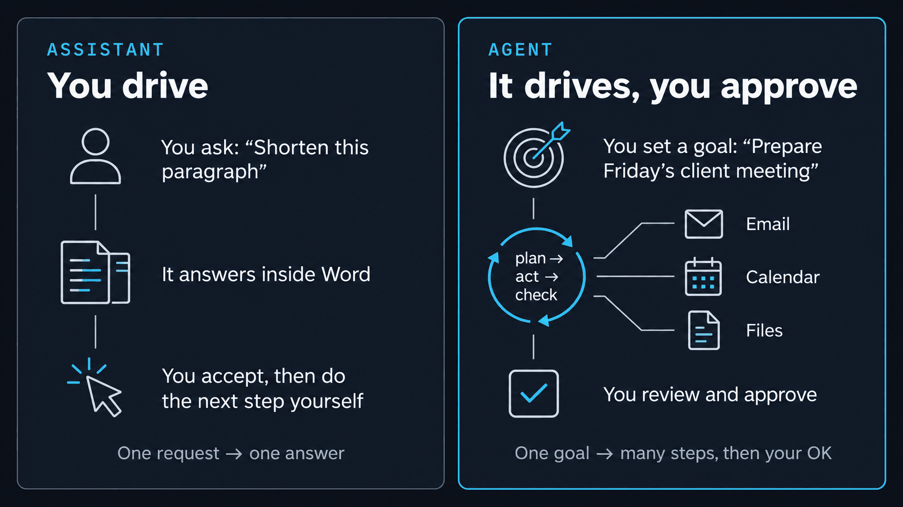
⏱ 2 min. “This is the most important difference in today's lesson. Remember: either you drive, or it drives.”
On the left is the assistant. You ask “shorten this paragraph”, Copilot answers right in Word, you accept the edit and take the next step yourself. One request, one answer. On the right is the agent. You set a goal: “prepare Friday's client meeting”. The agent plans, acts and checks by itself: looks at the calendar, drafts the email, builds the file. Before important actions such as sending the email it asks for your “yes”. One goal, many steps, then your OK.
Inside are the same models you called in L03
- Models: OpenAI GPT, Anthropic Claude and Microsoft's own MAI models. Auto picks the model for you.
- Model names change every month: remember the levels, not the names.
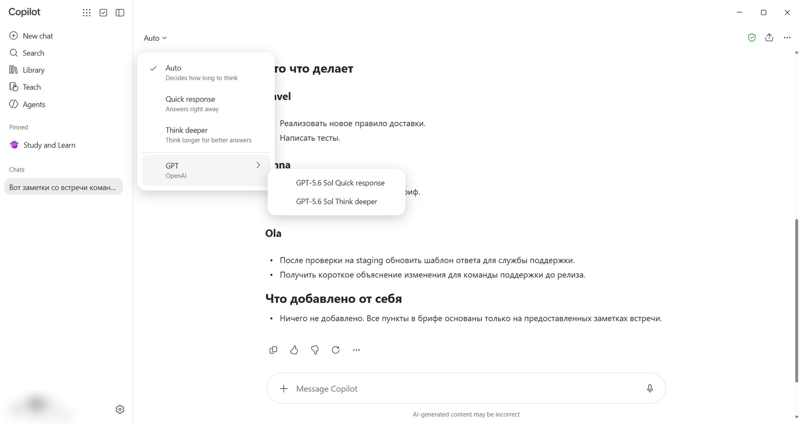
⏱ 3 min. “In L03 you called a model from Python yourself. Copilot makes the same call for you and adds your context to the request: a file, an email, the screen.”
Three levels keep the names apart. One: answers, an ordinary chat. Two: edits the document: Copilot in Word or Excel changes the file itself. Three: an agent: you describe the result and it plans and runs the steps, asking before anything important.
On the right is our real capture: the IT Park work Copilot, model menu. You see Auto and GPT-5.6. With a paid licence the menu also shows Claude. At Build 2026 Microsoft showed seven of its own MAI models. Takeaway: Copilot is not one model but several, chosen for the task.
One Microsoft Copilot app, two doors
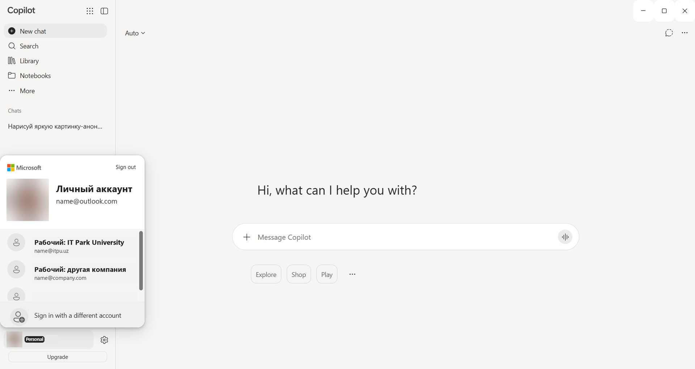
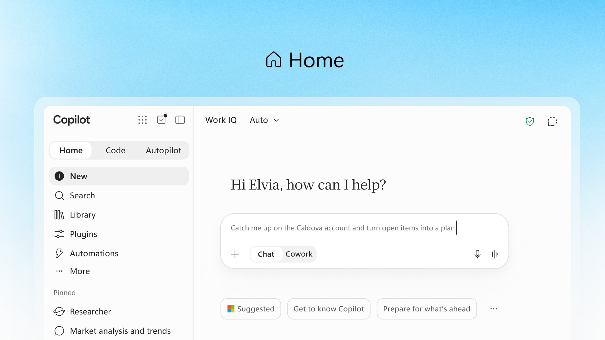
⏱ 4 min. “If the names confuse you, you are not alone. Microsoft renamed these products several times in two years.”
On the left is our capture: one Microsoft Copilot app with the account switcher. The personal account and the IT Park work account sit side by side, but data does not flow between them. E-mails and photos are hidden.
The key difference at work. Copilot Chat is free for work and school accounts: it answers from the web and from what you paste or upload, with enterprise data protection (the green shield). Microsoft 365 Copilot is a paid licence: Copilot sees your mail, files, meetings and chats. Our IT Park account has Copilot Chat (Basic), no licence. Yours most likely too.
On the right is the official picture: the new app with three tabs. Home: chat and the Cowork agent. Code: build a small app by describing it. Autopilot: a background agent, still in preview. The dictionary below: the Office app became the Microsoft 365 Copilot app, now simply Microsoft Copilot; Bing Chat is Copilot; Copilot Pro was retired and replaced by Microsoft 365 Premium.
What is free and what is paid
⏱ 3 min. The only slide with prices. “Prices change, so plan names and numbers live only here, with a date.”
Left to right is a ladder. Free: personal Copilot, work Copilot Chat and GitHub Copilot Free. Home: Microsoft 365 Personal, Family and Premium; Premium includes the Researcher and Analyst agents. Copilot Pro is no longer sold. Work: Copilot Business for small companies at $21 and Microsoft 365 Copilot at $30 per user per month.
Agents are a separate story: Cowork, Code, Autopilot and the newest models are billed by usage, in credits. This is new in 2026. Nothing paid is needed for the homework.
Meeting notes → brief → launch picture
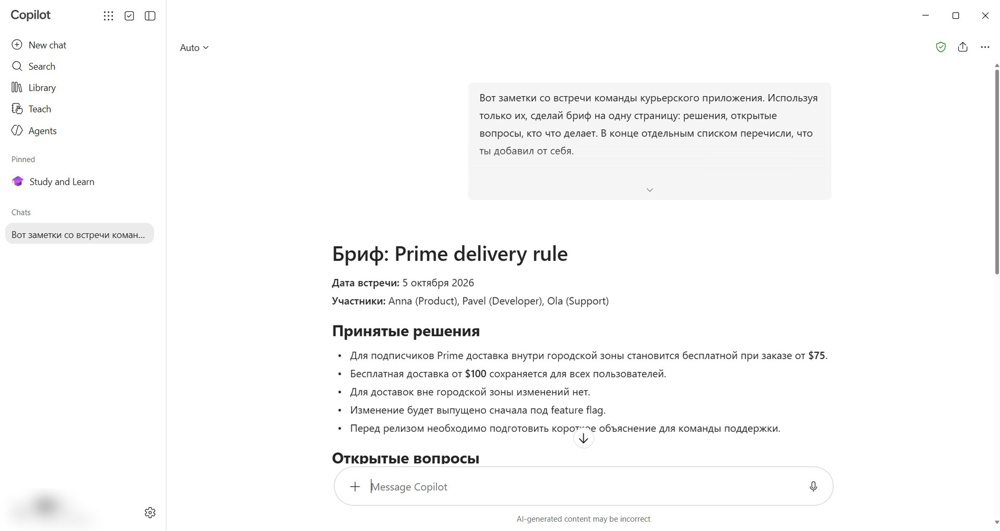
meeting_notes.md: “Only from these notes, a brief. At the end: what you added yourself.”⏱ 3 min. Briefly show what the app has; the live demo is optional. Open the Copilot app with the school account (Copilot Chat), exactly as students will.
Step 1. Paste the meeting notes and the prompt from the slide. The key part is “list what you added yourself”. A simple guard against invention. In our run on 13 Oct, once Copilot said “nothing added”, another time it honestly listed the section structure and an explanation that rollout means a staged launch. The same prompt gives different answers; that is normal, which is why we check.
Step 2. Check against the source out loud with the group: $75 only for Prime and only in the city; free from $100 for everyone stays; nothing changes outside the zone; who owns the flag is an open question.
Step 3. Personal account: “Draw a launch picture…”. On the right is our result. Open the picture: there is a built-in editor: Erase, Upscale, Edit object, Background, Crop. This used to be called Designer. If the network or account fails: this slide is the result; do not troubleshoot for more than 90 seconds.
Copilot Vision: the assistant sees the window you share
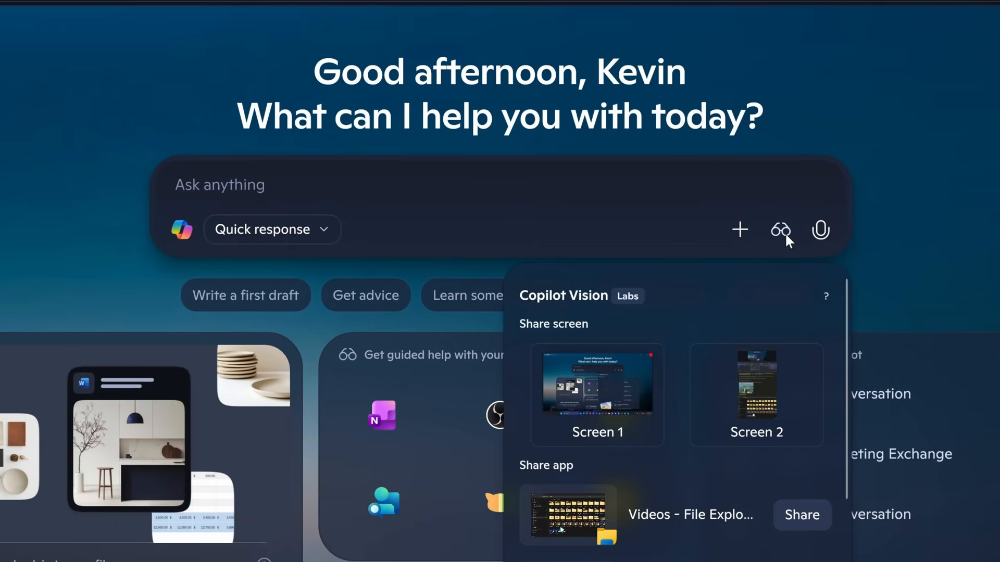
release_checklist.txt in Notepad.- Sees only the chosen window, only while you share.
- Points and highlights, but does not click for you.
- No microphone? Paste the text into chat: same result.
⏱ 3 min. The wow moment. “So far we pasted text into chat. Now Copilot looks at the window itself.”
On the left is a frame from a review: the Copilot window in Windows and the choice of what to share, the whole screen or one app. Choose one app: then Copilot sees nothing extra.
Live demo: open the release checklist, turn on Vision, pick Notepad and ask by voice. The right answer is item 6: “Roll back the flag if outside-zone fees change unexpectedly.” Vision for personal accounts works in 170+ markets; for work accounts it is only rolling out, hence the preview badge.
Fallback without a microphone: paste the checklist text into chat and ask the same question. Same rule as slide 5: Copilot sees only what you show it.
Copilot in Windows: what it can do and where the limits are
- Chat and voice: on any Windows 11 PC; “Hey Copilot” is a setting.
- Screenshot and Vision: share a window; Copilot highlights but does not click.
- Files: upload or find on the PC and ask about them.
- Create an image or a Word, Excel, PowerPoint file from an answer.
- Connect OneDrive, Outlook.com, Gmail, Google Drive, Calendar: on copilot.com and mobile.
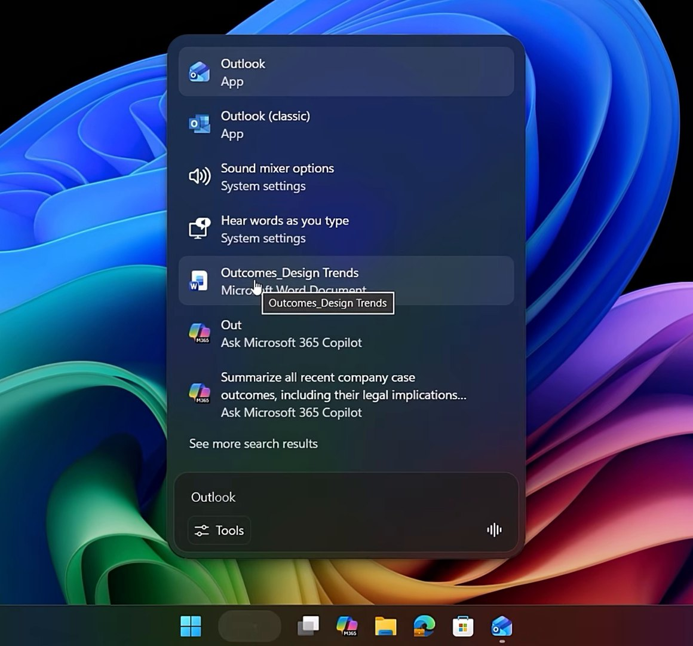
⏱ 5 min. “Copilot is already on everyone's Windows. Let's see what it does for free and where it stops.”
What works on a normal Windows 11 PC with a personal account: chat and voice; open with the Copilot key or Win+C; “Hey Copilot” is an optional setting. Screenshot or Vision: you share a window, Copilot highlights where to click but clicks nothing itself. Files: upload one or ask it to find a file on the PC and ask about it. Create an image or a Word, Excel or PowerPoint file from an answer. Connectors to OneDrive, Outlook.com, Gmail and Google Drive work on copilot.com and mobile; Microsoft lists a Microsoft 365 subscription for them.
The only official numbers: up to 20 files per chat, up to 50 MB per file, history kept 18 months. Microsoft does not publish message, prompt-length, image or voice limits for the free tier; numbers like “15 fast images” online are unofficial. Microsoft 365 Personal, Family and Premium give “more”, also without numbers.
Copilot+ PCs with an NPU only: Click to Do, Recall and the Settings agent. Copilot Actions, where an agent works inside apps, is still Insider-only. Privacy: in a personal account training on your conversations is on by default; show where to turn it off: profile, Settings, Privacy, Training on conversation activity. Work and school accounts are never used for training.
Teams: a meeting becomes a recap and tasks
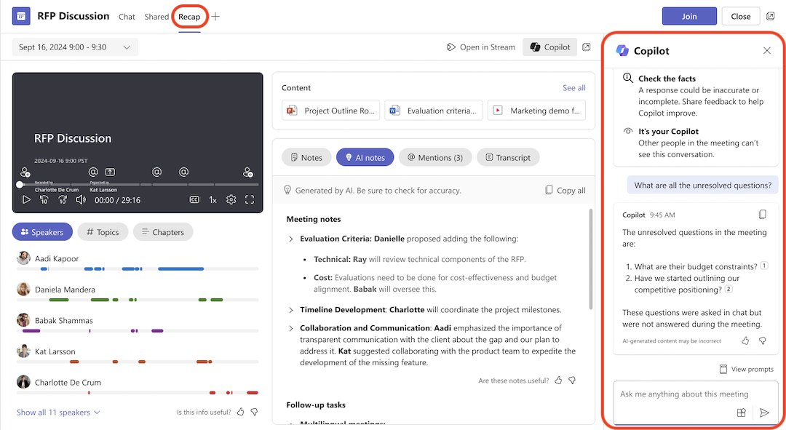
- During: “what did I miss?”, “what is still open?”
- After: notes, tasks with names, a Word document of the meeting.
- Needs the meeting transcript; @Copilot in chat is in preview.
⏱ 6 min, live. “This lesson runs in Teams, so you are already sitting inside one of the Copilots.”
On the left is Microsoft's official screenshot: the Facilitator agent in a meeting. It runs the agenda with a timer per topic, writes shared notes participants can edit, and answers questions in the meeting chat. After the meeting it can produce a Word document.
On the right is Recap, the tab after the meeting: AI notes, tasks, chapters, who said what. Inside you can ask Copilot: “which questions are still open?”. All of this needs the transcript turned on and a Microsoft 365 Copilot licence. Without a licence Teams has Copilot Chat and suggested replies.
Wow option if the instructor has a licence: turn on Facilitator for this lesson and show the recap at the end. No licence: show this slide and the rule “the button moved, the rule did not”.
How we show it in this course: Copilot in Teams needs a Microsoft 365 Copilot licence and the IT Park school account has none. So Teams is shown with the screenshots. Live, do the same thing: open Copilot Chat (IT Park), paste meeting_notes.md as a “transcript” and ask “What was decided? What is open? Who does what?”: you get the same recap.
Word: a draft from a file and edits right in the document
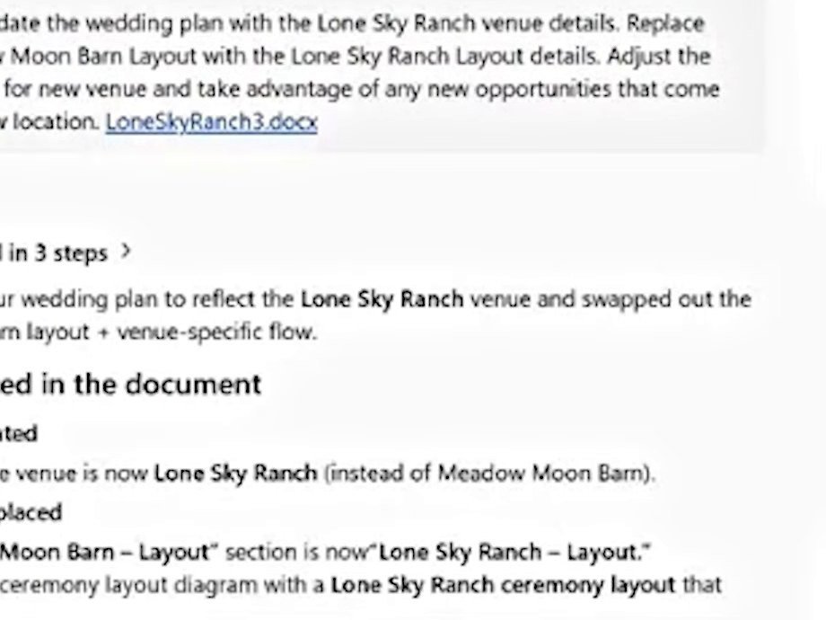
- Draft: “write a brief from /meeting_notes”: Copilot uses your file as the source.
- Edit: select a paragraph → “shorter”, “simpler”, “as a table”.
- Check: Copilot highlights the changed words and cites the source.
⏱ 5 min, live. “The same brief we made in chat, only right inside the document.”
A frame from an official Microsoft video (July 2026). The user writes a prompt that points to a file. Copilot works in a few steps and reports on the right: “What I updated in the document”. That is level 2 from slide 5: Copilot edits the file and you see the list of changes.
Three moves: a draft from a file; editing selected text; checking: Copilot highlights the words it changed and adds citations. Needs a work licence; without one, Copilot Chat with pasted text gives the same result, as in demo A.
How we show it: Copilot inside Word needs a licence (without one the Word ribbon only shows “Buy Microsoft 365”, checked 13 Oct 2026). Live in IT Park Copilot Chat: upload meeting_notes (+ → file) and ask “Write a one-page brief and create a Word file”. Then “shorten the Decisions section to three bullets”: that is document editing.
Excel: ask the table in words, then check the numbers
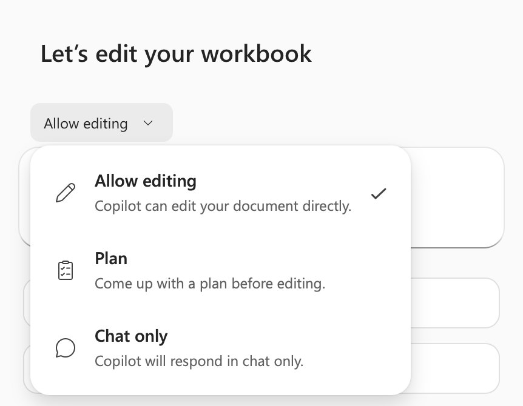
- Formulas, pivots, charts, formatting: in words.
- The
=COPILOT()function from old videos was removed on 14 Sep 2026.
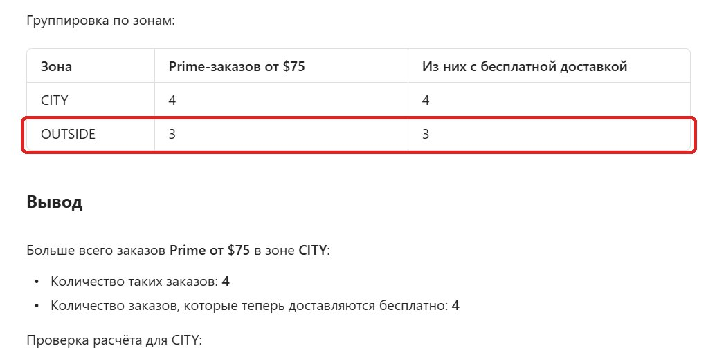
⏱ 5 min. “Excel is where Copilot is strongest and most dangerous: numbers look convincing.”
On the left is the official screenshot: Copilot in Excel now has three modes. Edit changes the workbook directly. Plan shows the steps first and you approve. Chat only changes nothing. If an old video shows =COPILOT() in a cell, it was removed in September 2026.
On the right is our real run in free Copilot Chat: 12 made-up orders, the question “which zone has the most Prime orders from $75 and how many are free now?”. Copilot counted 4 in the city (right) and 3 free outside the zone (wrong). The Prime rule applies only in the city; outside the zone only order 1011 for $130 is free, under the general “from $100” rule. We ran it twice; the mistake repeated.
Takeaway: Copilot did not know the rule because we did not write it, and honestly marked its assumption with an asterisk, but the conclusion is still wrong. Put the rule into the prompt and check a row or two by hand. L08 covers data analysis in depth.
How we show it: Copilot inside Excel via the screenshot on the left. Live in IT Park Copilot Chat: upload orders.csv or paste it as text and ask the slide question; then add the rule “Prime is free only in CITY” and compare the answers. Free, and every student can do it.
The same button, a different document
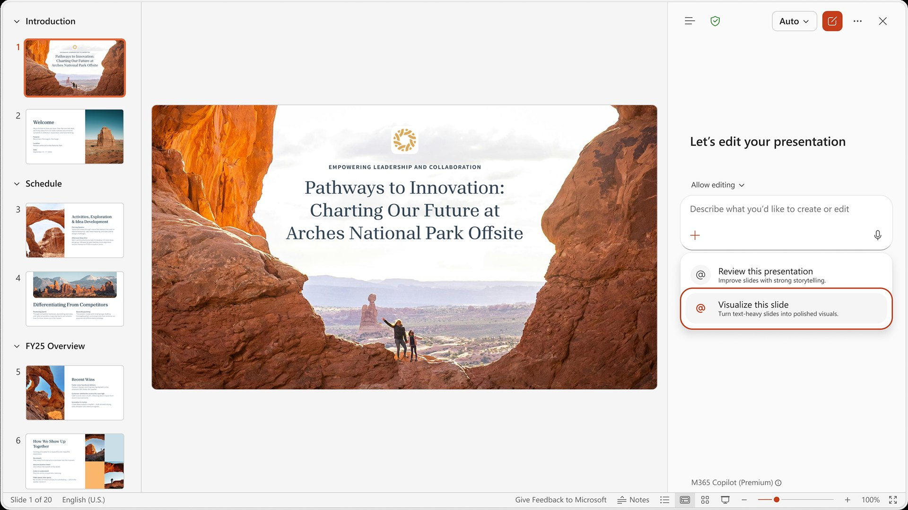
- A deck from a Word document: Copilot first asks about audience and style.
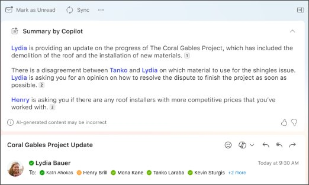
- Draft a reply and set the tone: politer, shorter.
- Sort the inbox in words, with confirmation.
⏱ 4 min. “Same model, same context rule, only a different document is open.”
PowerPoint. Copilot builds a deck from a Word file and first asks clarifying questions: for whom, which style. In the screenshot is the “Visualize this slide” skill: Copilot turns a text slide into a picture with a diagram. Check numbers and names on every slide: Copilot likes to add nice but invented details.
Outlook. A summary of a long thread with citations to specific emails, the numbers in square brackets. A reply draft and tone. Inbox sorting: “move all newsletters into a folder”; Copilot asks for confirmation if more than five emails are affected.
Without a licence: paste the email text into Copilot Chat and ask for a summary: a similar result.
5 minutes: coffee and a rest from the screen
Next: agents that do the work, your own agent, GitHub Copilot, Copilot for companies, a game and homework.
⏱ 5 min. Press “Start”. Rest only, no chat tasks.
Agents: Copilot does the work, not just answers
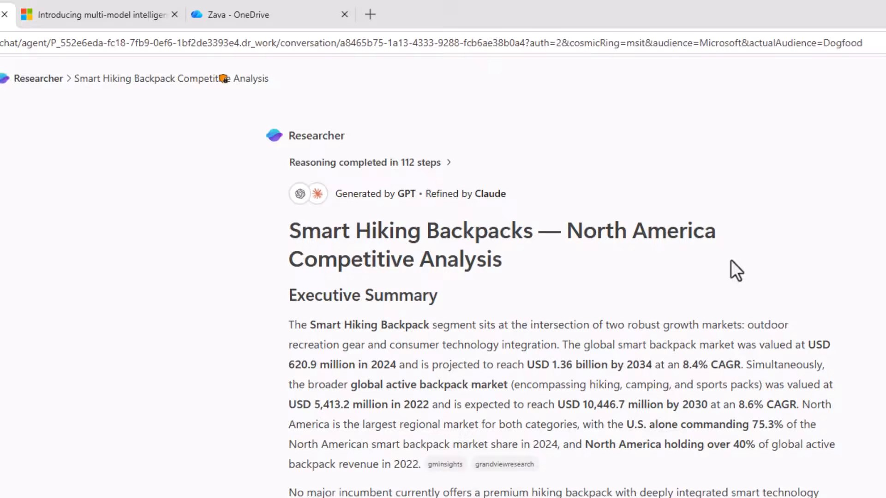
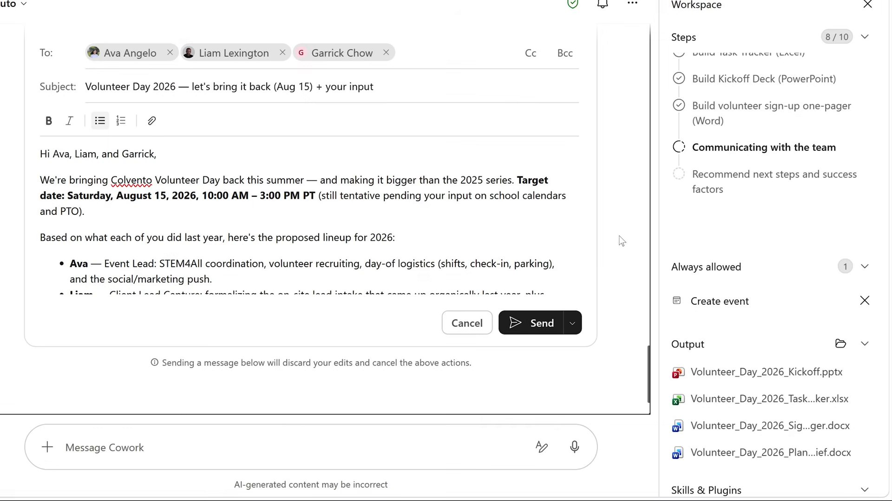
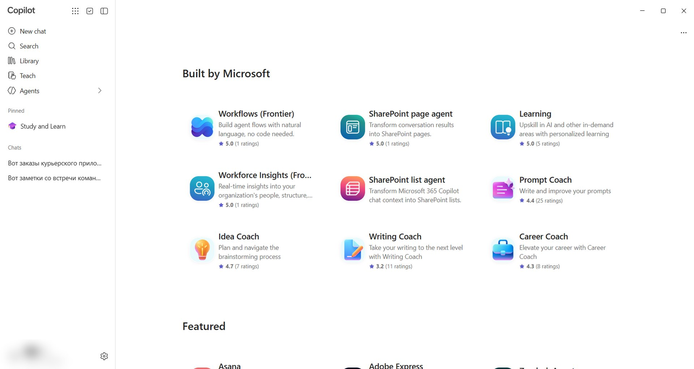
- Researcher: multi-step research over the web and your files, a cited report.
- Analyst: analysis of uploaded tables: trends, forecasts (more in L08).
- Cowork: describe the result; it builds documents, emails, meetings; asks for approval.
- Autopilot: a background agent “on duty”, still a private preview.
⏱ 4 min. “The big trend of 2026: from an assistant that answers to an agent that does.”
Researcher. A frame from Mike Tholfsen's review (April 2026): a market research report, 112 reasoning steps, labelled “Generated by GPT — Refined by Claude”. Microsoft uses two models: one writes, the other checks. That answers why Copilot has several models.
Cowork. A frame from Kevin Stratvert's review (July 2026): on the right the step plan, in the centre an email draft waiting for your approval, below finished PowerPoint, Excel and Word files. The key agent rule: it asks before important actions such as sending an email or a meeting invite. Cowork was built with Anthropic and is billed by usage.
On the right is our capture: the Agent Store exists even in the free IT Park Copilot Chat: Prompt Coach, Writing Coach, Learning. Try Prompt Coach in the homework: it teaches better prompts.
Anatomy of an agent
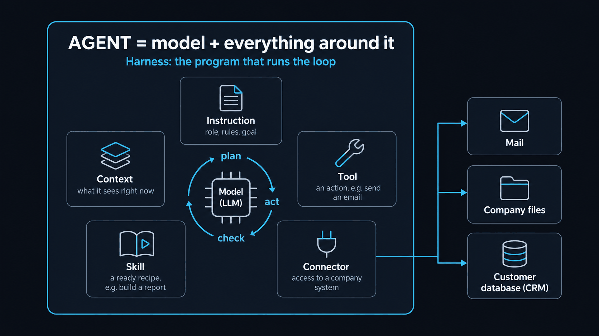
⏱ 2 min. “We are about to build our own agent. First, let's see which parts it is made of.”
In the centre is the model, the same LLM. Around it is the harness: the program that runs the loop plan → act → check and plugs in five parts. Instruction: role, rules and goal. Context: what the agent sees right now: the conversation, the open file, the results of its steps. Tool: one action, such as “send an email”. Skill: a ready recipe of several steps, such as “build a report”. Connector: access to a company system: mail, files, the customer database (CRM). Connectors and MCP in detail come in L12.
Bridge: on the next two slides we fill these parts in Agent Builder (instructions, knowledge, skills) and get a working agent.
An agent is Copilot with your instructions and your knowledge
- Support helper: answers from the delivery rules (our example)
- Course tutor: explains lesson topics and quizzes you
- Rubric checker: compares homework with the 6 checks
- Translator: the Text Translator template: RU ↔ EN ↔ UZ
- Post writer: drafts announcements in the brand style
- Department FAQ: answers from the study-rules files
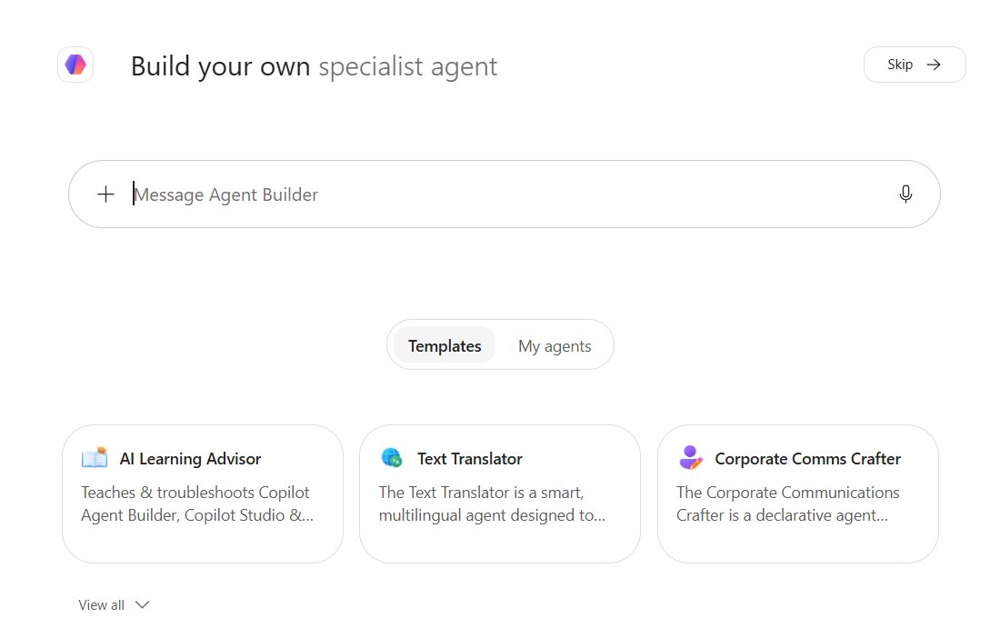
⏱ 3 min. “An agent is not magic: it is Copilot that was told its role once and given the right files. Then it follows those rules every time.”
The four parts of an agent in Agent Builder. Instructions: who you are, how you answer, what you never do. Knowledge: files, websites, SharePoint folders; web search is a toggle. Skills: since autumn 2026 every agent can write code, create Word, Excel and PowerPoint files and generate images by default; we saw this in the “What's new” window. Starter prompts: buttons the user starts with.
An important finding: we checked on 13 Oct 2026, the IT Park school account with free Copilot Chat has the New agent button and the agent gets created. So students can build an agent themselves. Knowledge from SharePoint and Teams is limited on the free tier; IT can switch the feature off in an organisation.
Offer the ideas as homework options. For an agent for a whole company with workflows and system connections, use Copilot Studio; that is L12.
We built a support agent in 5 minutes: a real run
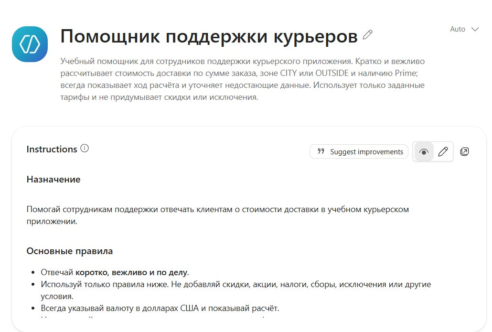
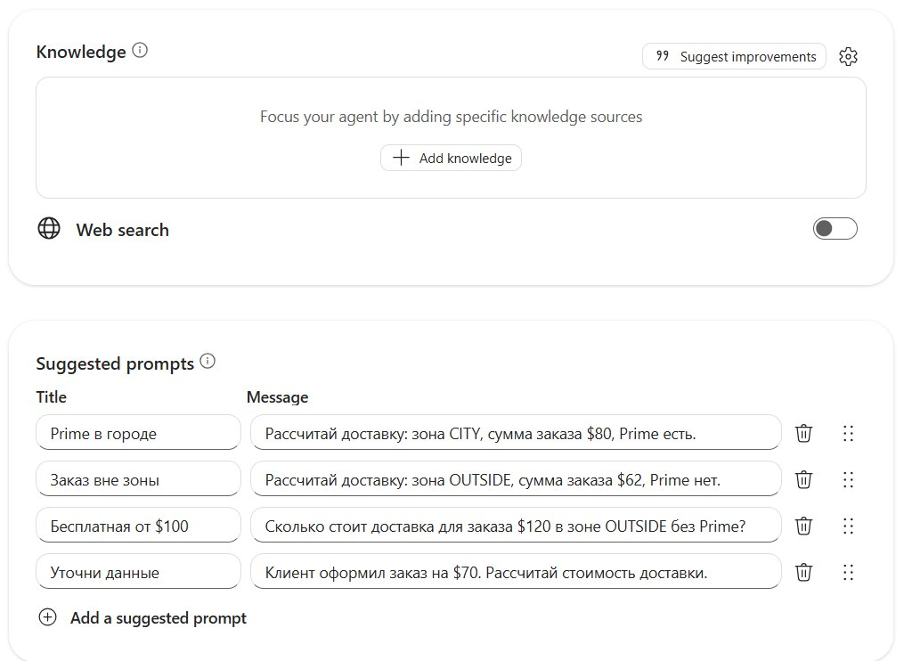
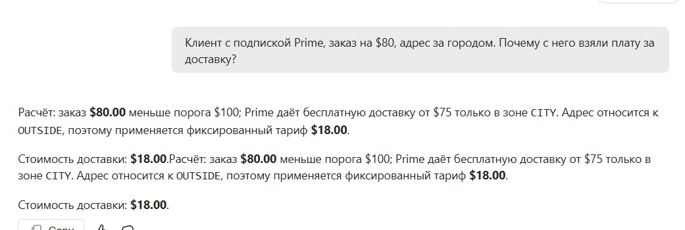
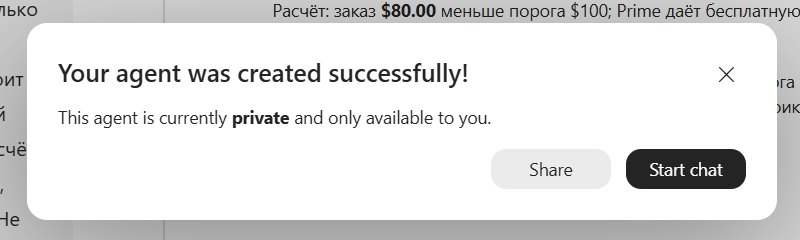
⏱ 5 min. Show it live (school account, Agents → New agent) or with these captures: our real run of 13 Oct 2026.
Step 1. Write the description in plain words, the same move as a prompt in L02: role, rules, format, what not to do. Agent Builder invents the name and description and splits the instructions into “Purpose” and “Main rules”. Step 2. The Configure tab: add knowledge (files, sites), toggle web search; it also wrote four starter prompts.
Step 3. Preview: test before publishing. We asked a tricky one: Prime, $80, an address outside the city. The agent answered $18.00 and explained that Prime only applies in the city. The second question had missing data, “how much is delivery for $70?”, and it did not guess but asked for the zone and Prime. That is what good instructions buy you. A detail: in preview the answer was duplicated; the interface is still rough.
Step 4. Create: the agent exists and is private. Share it with the Share button, by link or with the organisation if IT allows. Compare with slide 13: there Copilot got it wrong because it did not know the rule; here the rule is in the instructions, and the answer is right.
GitHub Copilot: Copilot for code (more in L16)
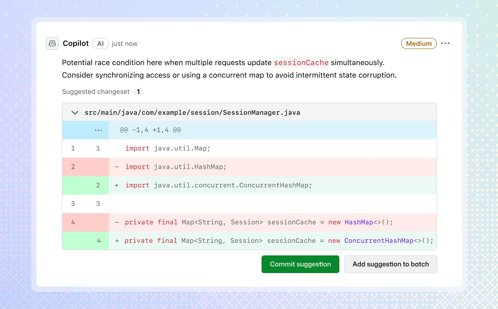
- Editor (VS Code etc.): completions, chat, agent.
- github.com: pull request review, a cloud agent per issue.
- Terminal and app: Copilot CLI, the GitHub Copilot app.
- In Teams: GitHub Copilot as an agent (October 2026).
⏱ 4 min. “GitHub Copilot is the oldest family member, since 2021. One slide today; all of L16 is about AI for code.”
Where it lives: in the editor it suggests lines, answers in chat, and in agent mode edits files and runs tests itself. On github.com it reviews pull requests (in the picture it finds a problem and suggests a fix) and, as a cloud agent, takes an issue and opens a pull request itself. In the terminal and a separate app. And since October 2026 as an agent in Teams.
Our example: Pavel asked for the Prime rule. The real diff is two lines of logic plus three tests, all seven tests green (demo_courier_copilot/sample_repo). Same rule as everywhere: look at the changes and tests, not at the word “done”. GitHub Copilot Free is enough; GitHub gives students Copilot Student.
Copilot for the company: three examples
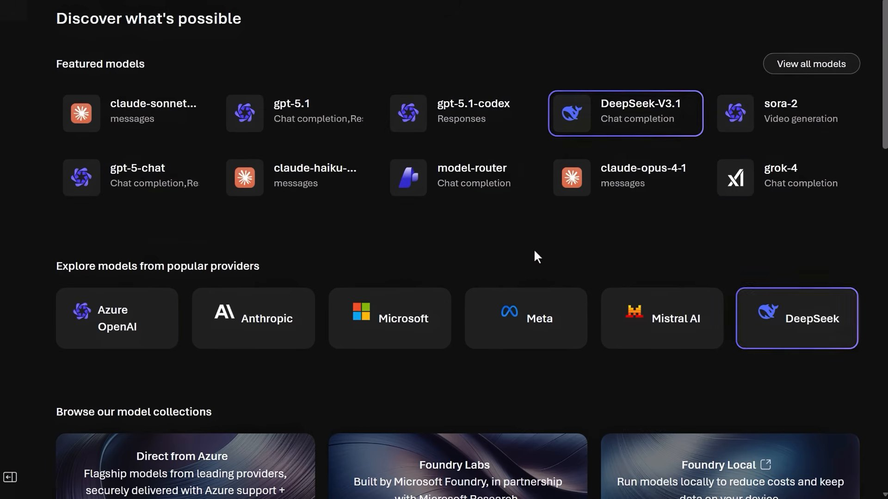
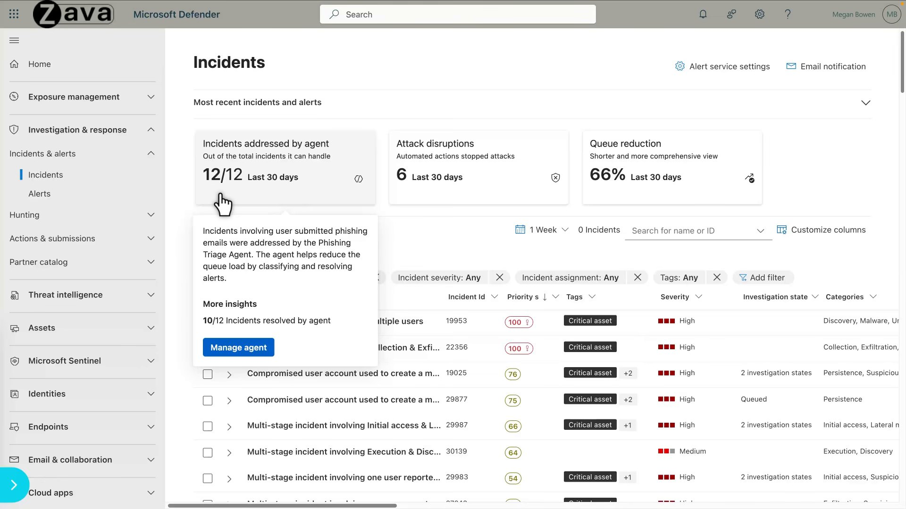
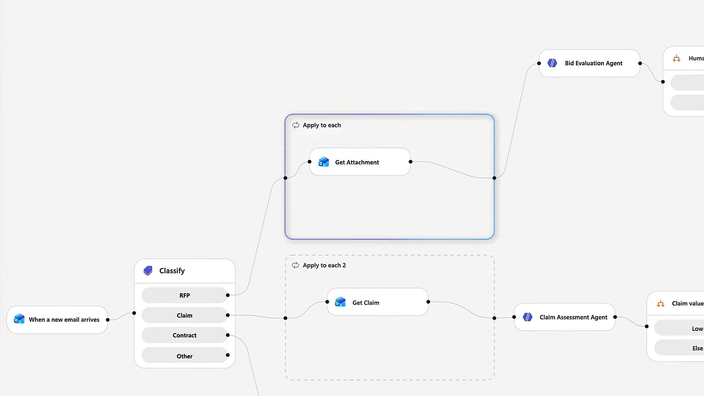
⏱ 2 min. “You will not open these yourself; IT turns them on. But it helps to know them: you will meet them in interviews and at work.”
Microsoft Foundry (formerly Azure AI Foundry) is the developer platform: thousands of models from many vendors, building your own agents and apps. This is where what you did in L03 lives at company scale.
Security Copilot is the security team's assistant. In the frame the phishing triage agent handled 12 of 12 suspicious emails itself. Since September 2026 it is included in Microsoft 365 E5 and E7.
Workflows: in Copilot Studio and Power Platform people build chains: an email arrives, it is classified, an agent evaluates it, a person approves. Name the others in one line: Dynamics for sales and service, Power BI and Fabric for reports, Dragon Copilot for doctors' notes, Agent 365 for inventory and protection of all agents in a company.
Where does this question go?
⏱ 5 min. Run a Teams poll per question or ask for answers in chat: “1-B, 2-A…”. 3 minutes for the game, 3 for the rules.
Answers. 1: B, for work: Recap in Teams (licence) or paste the transcript into Copilot Chat. 2: A, for you: Copilot Vision or a screenshot into chat. 3: C, for developers: GitHub Copilot in the pull request or editor. 4: A, for you: an image in the Copilot app. Arguable answers are good: discuss where the information lives.
Rules. Copilot sees only what you can access yourself: if a folder is not shared with you, Copilot cannot see it either. Work and school accounts are covered by an enterprise agreement: the green shield in the app. No passwords, keys or customer data in chat in any account. And every answer is a draft: check numbers and names, as on slide 13.
Homework: the courier team's week with Copilot
meeting_notes.md + “what Copilot added” + one invention or mistake you found.orders.csv as text, ask the slide 13 question with the rule, and check by hand.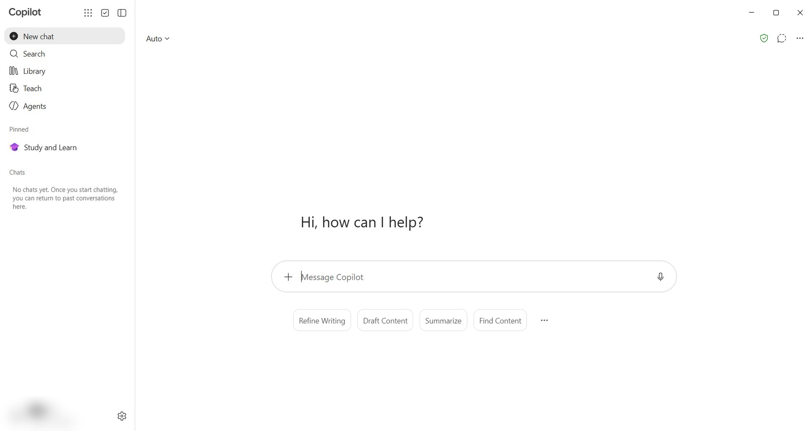
- source named
- inventions marked
- numbers checked by hand
- real screenshots
- the map names the product and what it sees
- no names, e-mails, secrets
demo_courier_copilot/. Synthetic data only.⏱ 5 min. “The whole assignment works in free Copilot, personal or school. Nothing to buy.”
Step 1 repeats demo A: the brief and what Copilot added, plus one mistake or invention you found. Step 2 repeats slide 13 with the rule in the prompt: “Prime is free from $75 only in the city; free from $100 for everyone”. Compare with your hand count. Step 3: text for three slides or a launch picture. Step 4 matters most: your map of five tasks and the Copilot for each.
The rubric is six checks on the right. An important one: screenshots must show no names, e-mails or secrets. Correct answer for step 2 with the rule: 4 Prime orders from $75 in the city (1001, 1004, 1006, 1009); outside the zone only 1011 is free.
The Copilot family in one line: for you · for work · for code · for the company
- First ask: whose information is it and where does it live?
- Same models inside; the difference is what Copilot sees and is allowed to do.
- Free: personal Copilot, Copilot Chat, GitHub Copilot Free.
- An agent does the work but asks for your “yes”.
- Every answer is a draft: check the numbers.
⏱ 3 min. Five rules out loud. Then the chat question: “which Copilot will you try this week, and for what?” Read 3–4 answers.
Next lesson L08: data analysis with AI. Chatting with a file, code that does the maths, and checking the conclusion on a practice sales table; Copilot in Excel is one of the options.